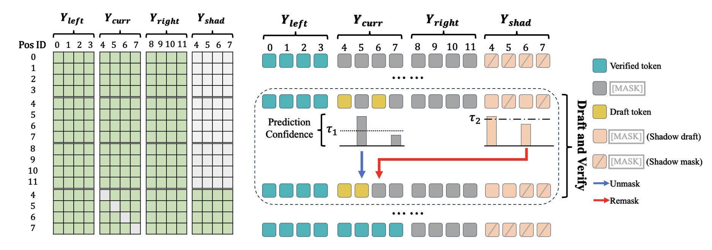
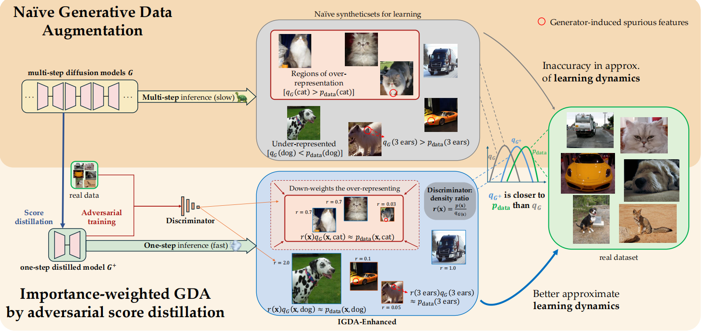

About
I am a first-year Ph.D. student in Information, Risk, and Operations Management (IROM) at the McCombs School of Business, The University of Texas at Austin, advised by Prof. Mingyuan Zhou.
I received my B.S. in Information Engineering from Shanghai Jiao Tong University in 2026, where I worked with Prof. Jiangchao Yao. During my undergraduate studies, I was also fortunate to work remotely with Prof. Mingyuan Zhou and Huangjie Zheng at UT Austin.
My research interests lie in generative models, especially diffusion models, and representation learning. I want to explore:
- How generative models, especially diffusion and autoregressive models, can achieve better and faster performance in various downstream tasks;
- How synthetic data produced by generative models, or the representations they learn, can assist representation learning.
News
- Serving as a Teaching Assistant for Data Science for Business Applications at UT Austin.
- Started my Ph.D. in IROM at UT Austin, advised by Prof. Mingyuan Zhou.
- Graduated from Shanghai Jiao Tong University as an Outstanding Graduate.
- WINO is accepted by ICLR 2026.
- DAR-GDA is accepted by NeurIPS 2025.
- WINO is accepted by the NeurIPS 2025 Workshop on Efficient Reasoning as a Spotlight.
- Started research internship at CMIC, Shanghai Jiao Tong University.
- Started remote research internship at UT Austin.
Publications
* denotes equal contribution
A training-free framework that pairs a fast System I actor with a System II planner by treating each decision as Bayesian inference over actions — recent history forms the prior and the planned future serves as evidence. Across three actors and four interactive benchmarks, BLaDe raises average success from 14.76% to 40.38% without updating the actor.

A training-free decoding algorithm that enables revokable decoding in DLLMs: it aggressively drafts multiple tokens in parallel while using the model's bidirectional context to verify and re-mask suspicious ones for refinement.

DAR-GDA unites model Distillation, Adversarial alignment, and importance Reweighting to make diffusion-quality augmentation both fast and optimized for downstream learning, matching or exceeding large web-pretrained text-to-image models while using only in-domain data.
Teaching
- Teaching Assistant, Data Science for Business Applications, UT AustinFall 2026
Honors & Awards
- Outstanding Graduate, Shanghai Jiao Tong University2026
- Silver Award, Sheng Xuanhuai Cup, Shanghai Jiao Tong University2024
- C-class Excellence Scholarship, Shanghai Jiao Tong University2024
- Third Prize, National College Students Mathematical Contest in Modeling (Shanghai)2023